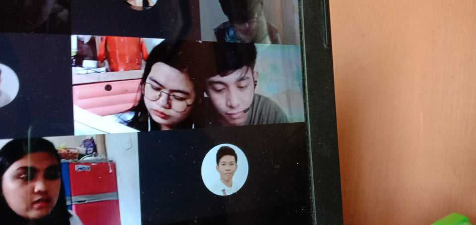

Online education have undoubtedly brought about a paradigm shift in the landscape of academic life. They've prioritized convenience by allowing students to attend lectures, participate in conversations, and complete assignments from the comfort of their own homes. This increased independence has reshaped the conventional college experience, allowing students to establish individualized schedules and adapt to their own learning methods. Furthermore, the digital sphere has broadened the scope of instructional resources, with a plethora of online materials, virtual labs, and multimedia information at our disposal. The absence of in-person contacts and campus buzz, on the other hand, has created a hole that many of us desire for, stressing the need of maintaining a balance between the digital and physical components of college life.
Returning to face-to-face teaching has been an exciting and difficult change, and it represents a new phase in the always changing college experience. The return to physical classrooms has reignited a sense of community and shared learning following a period of digital connection. It's incredibly energizing to reconnect with instructors and former students, have dynamic conversations, and discover the nuanced aspects of traditional classroom instruction. It does, however, also offer a unique set of modifications. These days, we have to manage crowded campus pathways, follow set schedules, and strike a balance between the demands of academic work and in-person social connections.
The switch to face-to-face teaching has brought to light the value of time management and the necessity of relearning how to take notes offline and participate actively in class. It's a return to the real world of printed materials, actual classrooms, and impromptu discussions that add a certain depth to the college experience.
Even if returning to in-person instruction has its share of difficulties, it also serves as a reminder of the priceless benefits of the typical college experience, which cultivates stronger bonds, sincere friendships, and a sense of progress toward common goals as we all pursue our academic goals.